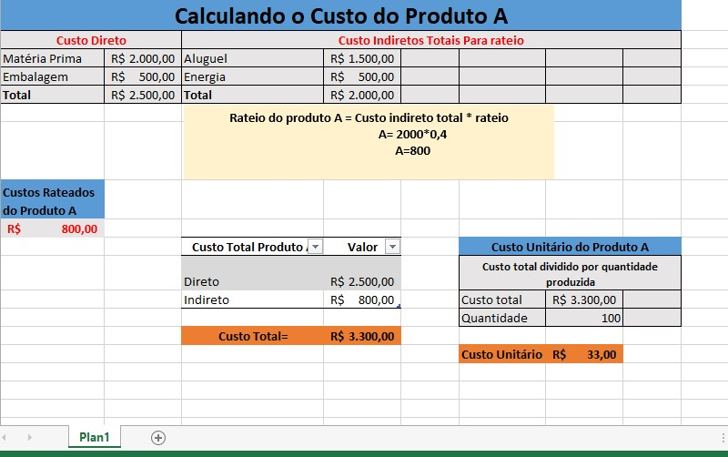

Como Precificar Seu Produto
Publicado em: 15/06/2023
A precificação é um dos aspectos mais importantes para o sucesso do seu negócio. O vendedor precisa ter o preço ideal o qual possa cobrir todos os custos e ter um bom retorno. Ao passo que o consumidor procura o produto ou serviço com base no preço e qualidade. Como aqui calculando o preço justo, isolaremos os outros fatores que influenciam na escolha do consumidor e analisaremos apenas a variável preço, com a premissa de que estamos em um mercado de concorrência perfeita, ou seja, o mesmo produto que você oferta pode ser encontrado com vários outros concorrentes.
O preço é o que vai influenciar na quantidade vendida, geração da sua receita e, assim, no lucro do seu negócio. Dado a formula básica onde: LUCRO = Receitas – Despesas. Quanto menor a despesa, maior seu lucro e também menor o seu preço, maior quantidade vendida, o que vai aumentar a sua receita.
Quanto maior a receita, maior seu Lucro. Vendo a formula da receita: Receita = PREÇO x QUANTIDADE VENDIDA . O ideal seria aumentar preço e quantidade vendida para uma maior receita. Como o vendedor não tem controle direto na quantidade que vai conseguir vender, o foco dele será decidir o preço. Assim, percebe-se a necessidade de dar uma importância maior a essa variável. A seguir, veremos os três critérios principais para essa decisão.
1. Calcule seus custos
Todo produto tem custos diretos e indiretos. Para carcularmos, vamos primeiro entender a diferença entre os dois:...
Custos Diretos
São aqueles que podem ser identificados diretamente com um produto, serviço ou projeto específico.
Exemplo:
Custos Diretos = Matéria-prima + Mão de obra direta + Outros custos específicos
Custos Indiretos
São gastos não vinculados diretamente a um produto, mas essenciais para a operação. Por exemplo, aluguel do prédio, salários, energia elétrica, etc. Veja como calcular:
Liste todos os custos indiretos do período (mês/ano). Escolha um critério: horas trabalhadas, custo de mão de obra, contas mensais de energia elétrica. Aplique o rateio aos produtos/departamentos.
Exemplo Prático
Custos indiretos totais: R$ 10.000 (aluguel + energia)
Critério de rateio: Horas de mão de obra direta (Produto A: 200h; Produto B: 300h)
Total de horas: 500h. Calculando consumo do Produto A: A = 200/500, então A = 0,4. O mesmo para o Produto B, então B = 0,6
Agora, abaixo veja o exemplo calculadora pela planilha, a qual deixarei disponível para download. No nosso exemplo, usarei apenas para calcular o Produto A.
Como visto na imagem acima, podemos calcular no excel o custo unitário do preço e é acima desse custo que você vai colocar sua margem de lucro. O preço tem que está acima do custo, e em equilíbrio com o preço da concorrência, o melhor cenário seria uma margem de lucro bem acima do custo total e abaixo da concorrência. Porém., sabemos que na prática é bem diferente do que pensamos. A seguir, você verá como pesquisar preço no mercado.
2. Entenda seu mercado
Para definir um preço competitivo e atraente, é essencial conhecer o mercado em que você está inserido. Isso inclui:
Pesquise os preços da concorrência
Faça um benchmarking (análise comparativa) dos produtos ou serviços similares aos seus. Identifique o preço médio praticado e os diferenciais que justificam valores mais altos ou mais baixos. Plataformas como Mercado Livre, Amazon, redes sociais ou sites de concorrentes podem ser boas fontes de pesquisa.
Analise a percepção de valor do seu público
Seu preço deve refletir não apenas o custo, mas também o que o cliente está disposto a pagar. Produtos premium podem cobrar mais se transmitirem exclusividade, qualidade superior ou benefícios emocionais (como status). Mercados com clientes mais sensíveis a preço (como commodities) exigem estratégias de custo-benefício.
Segmentação de mercado
Diferentes públicos podem aceitar preços distintos. Por exemplo: Versão básica: Preço acessível para atrair um público maior. Versão premium: Preço mais alto para quem busca qualidade ou status. Use estratégias como preços dinâmicos (ex.: promoções sazonais) ou pacotes diferenciados.
Regiões e fatores externos
Locais com maior poder aquisitivo podem suportar preços mais altos. Se a concorrência na sua área for acirrada, talvez seja necessário ajustar seu preço ou destacar seus diferenciais.
3. Defina sua margem
A margem de lucro deve cobrir seus custos fixos e gerar um lucro para a empresa. Seguindo nosso exemplo do Produto A, onde o custo unitário saiu por R$ 33,00. Vamos para uma situação hipotética para cacular nossa margem para um preço lucrativo e forte contra a concorrência. Nesse caso, vamos supor que a média do preço do produto A no mercado seja de R$ 42,00, sabedo nosso custo e conhecendo o mercado, decidiremos como maximizar nosso lucro.
Fórmula para calcular o preço de venda: Você pode usar a margem sobre o custo (markup) ou a margem sobre o preço de venda. Aqui estão as duas abordagens:
Margem sobre o custo (Markup): Mais simples e direta. Caso queira uma margem de 30% sobre o custo:
Fórmula:
Preço de Venda=Custo Unitário×(1+Markup %)
Preço = 33 × ( 1 + 0,30 ) = 33 × 1,30 = R $ 42,90 Preço= 33×(1+0,30)=33×1,30 = R$42,90
Margem sobre o preço de venda que é recomendado para controle financeiro. Pois nesse caso, a margem é calculada em relação ao preço final e não ao custo. Por exemplo, Se deseja uma margem de 25% sobre o preço de venda:
Fórmula: Preço de Venda = Custo Unitário 1 − Margem %
Preço = 33x ( 1 − 0,25) = 33x 0,75 = R $ 44,00 Preço= (1−0,25) 33 = 0,75x 33 = R$44,00
Qual margem usar?
Se seu mercado é sensível a preços: Use o markup (ex.: 30% sobre R$ 33 = R$ 42,90), ficando próximo à média da concorrência (R$ 42). Se seu produto tem diferencial competitivo: Use a margem sobre o preço de venda para garantir lucratividade (ex.: R$ 44).
Por fim, embora seja de suma importância os cálculos, a criatividade pode fazer a diferença na sua administração. Lembrando que a chave do sucesso é ter as melhores ferramentas para o controle financeiro. Na parte de calculadora desse site, você poderá calcular o seu preço de venda adicionando também impostos e descontos de forma gratuita. E mais, a planilha disponibilizada na aba de download já vem no jeito para você só mudar os dados e ter o resultado sem precisar se preocupar com as fórmulas. Até a próxima!